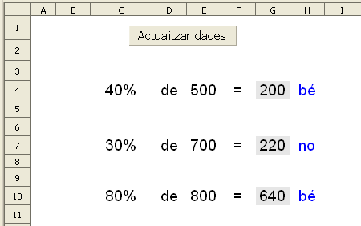
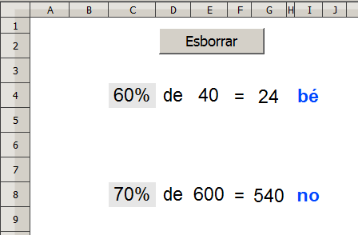

Presentació gràfica de l'activitat:

Funcions que es fan servir en aquesta activitat
Objectiu de l'activitat
Càlcular mentalment el resultat d'aplicar el tant per cent a un número.
Desenvolupament de l'activitat
1. Obrir el fitxer M5 i afegir un nou full amb el nom de M5P5 percentatge 1
2. Fer que les cel·les del rang C4:H10 tinguin un format (atributs de cel·la) semblant al de la presentació de l'activitat.
3. Escriure a la cel·la J4: =SI($A$1=0;ALEATENTRE(10;100))
4. Escriure a la cel·la L4:=SI($A$1=0;ALEATENTRE(10;1000))
5. Escriure a la cel·la N4: =C4*E4/100
6. Escriure a la cel·la C4: =MIG(J4;1;1)*10
11. Crear un botó de prémer de Controls de formulari i assignar-li la macro feta anteriorment.
12. Validar la cel·la A1 per al valor 0.
13. Protegir les cel·les que convingui.
14. Ocultar les cel·les que convingui.
15. Comprovar que l'activitat funcioni correctament.
16. Desar el fitxer M5
Presentació gràfica de l'activitat:

Funcions que es fan servir en aquesta activitat
Objectiu de l'activitat
Calcular mentalment el percentatge aplicat a un número en funció d'un resultat.
Desenvolupament de l'activitat
1. Escriure a la cel·la L4: =SI($A$1=0;ALEATENTRE(1;9))*10 per obtenir un número aleatori que representa el tant per cent que s'aplicarà al valor de la cel·la M4.
Observar que el valor de la unitat del número mostrat a la cel·la L4 sempre serà el zero.
2. Copiar la cel·la L4 a la cel·la M4.
3. Escriure a la cel·la N4: =L4*M4/100 per calcular el resultat d'aplicar el tant per cent (valor de la cel·la L4) sobre el valor de la cel·la
M4.
Per donar opció a que el número al qual s'aplica el percentatge sigui un número de dos o tres dígits, es pot fer el següent:
4. Escriure a la cel·la M5: =SI($A$1=0;ALEATENTRE(1;9))*100
11. Crear un botó de prémer de Controls de formulari i assignar-li la macro feta anteriorment.
12. Validar la cel·la A1 per al valor 0.
13. Protegir les cel·les que convingui.
14. Ocultar les cel·les que convingui.
15. Comprovar que l'activitat funcioni correctament.
16. Desar el fitxer M6